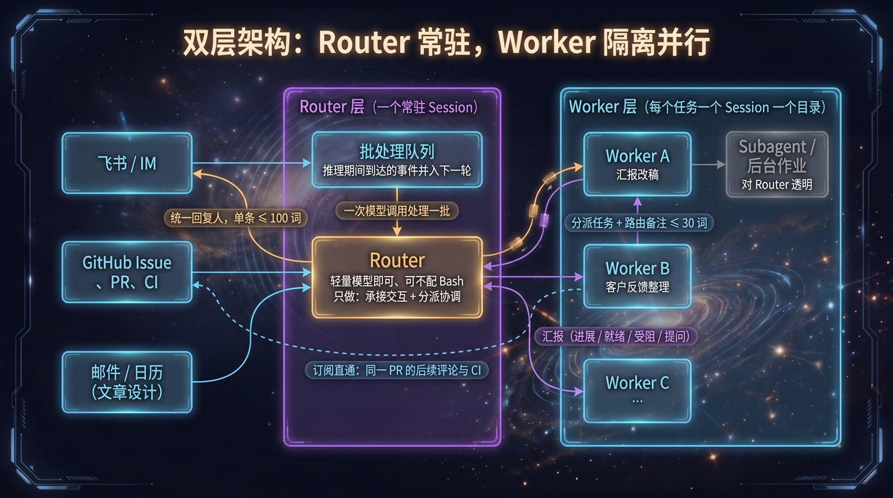
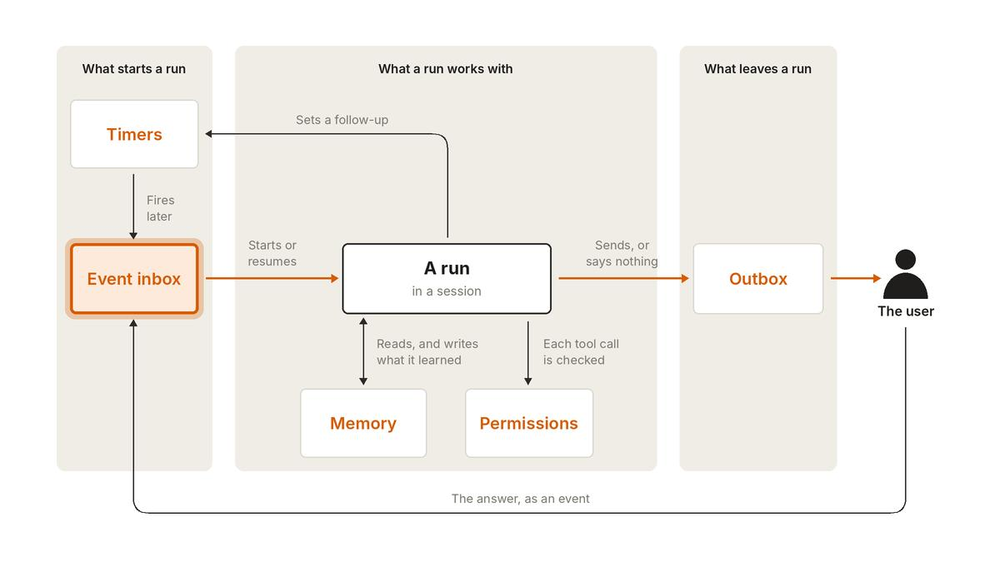

架构对照 · 2026 年 11 月
DeepSeek Super-agent 与 Anthropic always-on agents：同一层系统结构，两种取舍
10 月 31 日，DeepSeek 产品部与 Harness 团队发布长文《Super-agent 设计探索：迈向更自主的 Agent 系统》，同日开源研究原型 dsh-superagent-prototype（MIT，约 1.5 万行 TypeScript）。11 月 13 日，Anthropic 的 William Hu 发布《Building always-on agents》，用五个原语拆解“一个不下班的 Agent”该怎么搭。两篇相隔两周，写的是同一件事的两面：当 Agent 必须跳出“人开一个会话、它干一件事”的模式，系统层要额外承担什么。
两篇的气质差别很大。DeepSeek 从组织出发：多个渠道、多个人、多张工单，核心问题是“任务与任务之间谁来管”。Anthropic 从运行出发：一个用户、无数次运行，核心问题是“每次醒来带什么、干完留下什么”。但把两套方案的概念并排放，会发现它们在更深的层次上几乎同构——都把会话降级成执行记录，把授权从提示词挪进代码，把对外动作改成“先存后做”。分歧在于判断放在哪一层、连续性靠什么维持。
本文的证据边界：DeepSeek 的设计长文首发于官方公众号，没有公开直链，因此文中的机制描述以它同日开源的仓库文档（docs/000–007）和公开复述为准；原文与原型并不完全一致，凡涉及实现细节处，以原型文档为据并单独说明。Anthropic 一篇为公开网页原文，日期为 2026 年 11 月 13 日。
DeepSeek 给 Super-agent 的定义是“打破 Agent 与单次手动会话的绑定”，并列出四个特征：连续、高效、主动、持久。这四个词听起来像形容词，但每一个都对应一条可在评审里验收的工程要求，也各自指向单循环结构的一个硬缺口。
| 特征 | 要满足的工程要求 | 单 ReAct Loop 为什么做不到 | DeepSeek 的承载模块 |
|---|---|---|---|
| 连续 | 不同渠道里关于同一件事的信息，由系统接到同一个任务上，人不搬运上下文 | 上下文是一条线性历史，跨渠道的同一条线只能靠人复制粘贴 | Thread 订阅、链式召回 |
| 高效 | 上一条指令没做完也能接新指令；多个任务并行且互不污染 | 结构上串行：执行一个五分钟的工具调用时，它听不见新消息 | 双层架构、异步工具调用 |
| 主动 | 持续观察环境事件，值得处理的推进，不值得的保持安静 | 由人的输入驱动，没有人说话它就停 | Trigger、两级过滤 |
| 持久 | 长期在线，遇到异常自动恢复 | 生命周期等于一个进程，进程没了它就没了 | 存算分离、阶段化恢复、Watchdog |
表 1：四个特征对应的工程要求。来源：DeepSeek Harness 团队《Super-agent 设计探索》及相关公开复述；“单循环为什么做不到”一列是对原文论证的整理。
关键在于这四个缺口都不在循环内部：不是提示词写得更好就能补上的，只能在循环外面加一层系统结构。DeepSeek 的原话大意是，这一层里没有新理论——调度与执行分离、发布订阅、快慢路径、缓存管理、投机执行、无状态服务、看门狗，都是计算机系统的老办法，只是第一次被成套地搬到 Agent 上。
Anthropic 的表述几乎是同义的：always-on agent 底层跑的仍是那个 core loop，区别在“围绕它的架构”——由一组原语决定 Agent 什么时候醒来、运行之间带什么、工作怎么送到用户手上。它也给出了“为什么现在”的解释：最新模型的判断力更好（更懂用户意图、更知道什么时候该确认），智能正在变便宜，而且长程任务受益最大（在一个长程编码基准上，Opus 5.5 每个解出任务比 Opus 5 便宜 78%，普通负载上便宜 40%）。
先看它要解决的场景。Agent 正在改一份汇报，你又让它整理一批客户反馈，中间还随口问了一句留存率。三件事几乎同时到达。全部塞进一个会话，上下文最连贯，但客户反馈只能排队，两个任务的中间细节还会互相污染；每条消息新开一个会话，并发最高，但下午的邮件会被当成一件新事。前者优先一致性，后者优先吞吐量，双层架构是在两者之间划一条线。
Router 的职责被刻意收得很窄，只有两件事：承接所有入口的人类交互，处理任务之间的分派与协调。它不介入单个任务内部怎么拆，不亲自执行，甚至可以不配 Bash，实践中较轻量的模型就够。Worker 直接决定结果质量，通常配能力最强的模型，但不直接对外说话，只向 Router 汇报，由 Router 统一回复。

图 1：Router 常驻、Worker 隔离并行。来源：腾讯云开发者社区《DeepSeek 开源 Super-agent》解读配图（社区示意图，非官方原图）。图中“统一回复、单条不超过 100 词”“路由备注不超过 30 词”来自设计文章。
这是整套设计里最值得抄的一点。原型用两个 agent preset 把分工做成了硬约束，而不是靠模型自觉。主 Session 使用 dsh-superagent-router：文件工具的 write 与 edit 关闭，没有 subagent、没有 web、没有文件搜索、没有 todo、没有向人提问的工具；bash 保留，但前台命令 5 秒超时，另有一个 noWait 守卫直接拒绝主 Session 调用 sleep、超过 30 秒的 shell 超时和超过 5 秒的 job 等待。理由写在文档里：汇报和作业结果会以消息形式自动到达，等待只会延误新候选的处理。提示词里另有一条硬规则——路由备注最多 30 个词，中文按分词计数，只写路由背景和人的显式约束，不写实现指导。“能不能加个暗色模式”这句话要原样送到 Worker，不带 Router 自己挑的配色方案。
Worker 一侧刚好相反：每个 Ticket 一个 Session，命名 worker-<ticket id>，配一个按 Ticket 短名命名的目录，第一次派工前跑一次 prepare 命令，典型做法是 git worktree 建一个检出。它使用 dsh-superagent-worker preset，拿到完整的文件、搜索、shell、job、web search、skill、todo、subagent 工具；前台命令 5 秒后自动转后台作业，这样 Worker 在下一步就能收到新消息，而不是等一个长命令跑完。它没有向人提问、展示 UI、改 profile、调度、给其他 Session 发消息的工具，Ticket 结束后工具调用直接被拒。Worker 的 subagent 跑在 Harness 的 standard preset 下，继承 Worker 的权限，对 Router 透明。
并发由 Worker 槽位控制。一个 Ticket 从启动（含 prepare）到本轮结束占一个槽位；配置的并发上限之外另留一个槽位，专门给“人的消息和状态请求”，唤醒优先于新启动。文档把设计意图写得很直白：新工作不能阻止人继续一个已有的 Ticket。
文章做了对照实验：约 300 条消息里混着约 20 个工作请求，每种方案跑 5 次。
| 方案 | 分工情况 | 任务完成时间 |
|---|---|---|
| 单会话 + Subagent，中性提示词 | 5 次一次都没调用 Subagent，全部自己干，不断被新消息打断 | p95 29.5 分钟 |
| 单会话 + Subagent，优先委派提示词 | 5 次里 4 次分了工，剩 1 次判断活“很小”又自己干，形成长尾 | 整体仍慢于双层 |
| 双层架构 | 由架构保证分工 | p50 12.4 分钟 / p95 15.7 分钟 |
表 2：分工实验。来源：DeepSeek 设计文章中的初步实验；合成负载、简化环境，作者自述仅作参考。
结论比数字重要：分不分工不该取决于提示词写得好不好、模型怎么判断，应该由架构保证。靠提示词纠正“这活我自己干就行”的倾向，成功率是 4/5，不是 5/5；生产系统里那 1/5 就是长尾。
所有入口都汇到 Router，它自己会不会成为瓶颈？答案是批处理：Router 上一轮推理期间到达的消息积压下来，下一轮一起处理。压测里，待决定的消息从每分钟约 1 条增到约 40 条，平均每批从 1.0 条增到 2.8 条，单次请求耗时只从 2.5 秒增到 3.9 秒，分摊到每个决定上的推理时间反而从 6.4 秒降到 1.6 秒——思路和数据库的批量写入一样。但批处理提高的是有效吞吐，不保证每条消息的等待时间都更短；规模再大，Router 可以切分成多个会话，切得越细，分片之间的上下文就越不连续。文章把这一条列为开放问题。
“主动”和“连续”都落在事件驱动上。设计文章把群聊消息、邮件、日程提醒、代码评审评论、CI 结果这类环境事件统称为 Trigger。一条 Trigger 从进入系统到被处理，要依次回答四个问题，每个问题背后都是一台熟悉的机器。
flowchart TD
S["Source 事件：GitHub / 飞书 / CI"] --> G{"Gate：确定性准入"}
G -->|"explicit / inferred"| EV["Eval：模型研判 + 归属"]
G -->|"不相关"| F["记录 filtered，不调模型"]
EV -->|"accept"| K["Ticket：不可变 Mandate + 订阅"]
EV -->|"ignore / stop / unavailable"| D["Decision 记录"]
K --> W["Worker Session + 独立目录"]
S -.->|"已订阅 Thread 的后续消息直通"| W
W --> CH["Channel：IM 回复 / PR / 评论"]
图 2：Trigger 的主路径。据开源仓库 docs/001-domain.md、docs/002-authorization.md 绘制；第三、四关（链式召回、投机执行）属于上下文与前置准备策略，不在这条主路径上。
| 关卡 | 要回答的问题 | 机制 | 原型里的名字与细节 |
|---|---|---|---|
| 一 | 这条消息需要 Agent 处理吗？ | 快路径做确定性过滤，慢路径交给模型 | Gate 输出“强度”：白名单的人 @ 了 Agent 是 explicit；不在名单上的人或 bot 的消息最多是 inferred；其他不准入。准入选由每个 Source 的准入表（三格）决定，再叠加 off / observe / auto 三档模式。Assessment 只对 inferred 候选跑一次完整研判 |
| 二 | 该交给谁？ | 发布订阅：同一 IM 话题、同一串邮件、同一个 PR 构成一条 Thread | Worker 订阅 Thread 后，后续消息由程序直送，绕过 Gate，但不赋予新权限，仍受 Mandate 约束；人在自己 Thread 上的消息归该 Worker 决定，Router 此时只能执行人的 stop；Worker 可以把越界的消息退回一次并带理由；结束的 Ticket 保留订阅，可在同一 Mandate 下被一句评论唤醒 |
| 三 | 怎么找到之前那件事？ | 把上下文窗口当缓存管：Inline 内联近期信息，Spill 把放不下的内容留在窗口外只留摘要与续读入口 | 每个消息、Thread、Worker 会话都有 ID，注入上下文时附带紧密相关对象的 ID，模型顺着 ID 链回捞旧任务。原型把这些 ID 做成可读资源：文本页默认 4000 个 UTF-16 单元，列表默认 20 条 |
| 四 | 还没正式下指令，能不能先准备？ | 投机执行：先按最可能的方向算，猜对直接用，猜错丢掉 | 原型没有通用投机机制，对应物是 Policy 规则加 observe 模式：规则命中的主动工作默认只记录“本来会接”，切到 auto 才真执行 |
表 3：四道关。来源：设计文章与开源原型文档 docs/002-authorization.md；ID 注入的规模参数来自文章对原型的描述。
订阅直通的价值主要在成本。消融实验里去掉直通，任务完成时间基本不变，但 Router 要做的决定增加约 30%，总缓存读 token 从 2323 万涨到 3177 万，增幅约 37%。原文同时承认，Super-agent 整体比单会话消耗更多缓存读 token——效率是用 token 换来的。
最能说明“连续”在代码里长什么样的是这条规则：结束的 Ticket 保留订阅，PR 合并两周后有人补一句“这里好像有个回归”，当初那个 Worker 的 Session 和目录还在，可以直接接着干，不需要新的评估和授权。
文章把 Agent 拆成三块：推进 Agent Loop 的计算、需要持久保存的会话状态、由本地文件与代码仓库和各种工具构成的执行环境。设计上的第一步是计算与状态分离——Loop 放进云端无状态容器，Session 存进数据库，容器可水平扩展或替换，新实例读取已有状态，不把任务重新当成一件新事。第二步是计算与执行环境分离，而且选择“环境不搬”：端侧只装一个轻量 daemon，不保存会话状态，只执行命令返回结果，像 CI 系统里的 Runner；电脑离线时任务在云端等，第二天开机再核对等待中的步骤。原型离这一步还有距离，Worker 就跑在操作员这台机器上。
文章里有一句容易被漏掉的话：共享状态解决的是换台服务器后还能找到状态，并不保证正在执行的工作自动恢复，Agent 还需要知道接着执行哪一步、上一条工具命令是否已经生效。状态保存是恢复的基础，不是恢复的全部。
原型把“状态先于执行”做进了骨子里。Engine 的所有方法都是同步的，每个命令在一个事务里改完它的聚合；所有对外副作用——给主 Session 投递候选、启动 Worker、投递消息、发回复——都先写进 SQLite 的 effect 表，事务提交之后才真正执行，失败按指数退避重试。文档管这叫 stored work：先存，后做。重启时，正在运行的派工以 “host restarted” 结束，新派工带一条恢复提示启动，要求 Worker 先检查目录、git 历史和 GitHub，再重复任何对外动作，最老的 Ticket 先恢复。Session、目录、订阅、待发消息，以及“每个 Worker Session 把哪些消息读进了历史”这条记录，全部跨重启保留。
| 设计意图（文章） | 原型的落地方式 |
|---|---|
| 计算与状态分离，实例可替换 | 未上云：状态落本地 SQLite；Engine 同步方法 + 单事务写入，保证聚合一致 |
| 状态保存之后还要知道“做到哪一步” | effects 表记录待办副作用，提交后执行、失败重试；重启后用恢复提示让 Worker 自己核对现场 |
| 异常后自动恢复 | Ticket 阶段表把“等什么”结构化成 person（delivery / answer / review / blocked · failed）、working / queued、idle、working；Worker 用六种 Report 值汇报 |
| 执行环境留在原地 | 每个 Ticket 一个 git worktree；PATH 前置命令垫片（gh 走 Agent 账号、lark-cli 走机器人、个人 CLI 列为屏蔽命令）；独立 git 配置、SSH 改写成 HTTPS、清掉 token 环境变量 |
| 外部 Watchdog 巡检 | 文章层面设计：主系统外另起一个完整 Agent Session，用定时消息驱动，基础设施层处理接口报错与状态恢复失败，任务层由模型判断每个 Worker 有没有实质进展、方向是否偏离（本页对照：原型用阶段表与 Report 承接其中一部分判断） |
表 4：文章设计与原型实现的对照。来源：docs/003-execution.md、docs/007-architecture.md 与设计文章公开复述。“本页对照”一行为解读，非原文表述。
Watchdog 的思路值得单独记住：很多故障不是进程崩溃。设想晚上八点，汇报 Worker 进程一切正常，但它已经第五次调整同一张图表的配色——进程活着，任务没推进，存活探测发现不了。另一边，邮件接口间歇性报错，重启 Agent 也解决不了，问题在外部。所以长期运行的 Agent 系统要监控两层：基础设施是否健康，任务是否在有意义地推进。文章里的 Watchdog 本身是一个配置在主系统之外的 Agent Session，有完整工具，所以维护者可以用自然语言问它“昨晚那个汇报任务为什么卡住了”，也可以让它在线修正。
原型对自己的安全边界很诚实：那些命令垫片和目录只是默认值，不是安全边界，Worker 仍然可以用绝对路径执行任何程序，而且是以操作员的 OS 用户身份、无需审批。部署建议因此是三步：用只放 Agent 凭据的独立系统账号、白名单先只放自己、自动合并先别开。
Anthropic 先把一句容易被误解的话说清楚：always-on agent 并不是真的“一直在线”，那只是用户体验的描述。实际上它大部分时间在睡觉，周期性醒来干活。每一段工作叫一个 run：收到事件、完成任务、保存发生过什么。run 在 session 里执行，session 是消息与工具调用的完整记录；run 结束，Agent 回去睡，循环往复。

图 3：五个原语与一条 run 循环。来源：Anthropic《Building always-on agents》（2026-11-13）原文配图。
围绕 run 的架构由五个原语组成：事件收件箱、定时器、记忆、权限、发件箱。下面把每个原语的实现细节摊开——这部分比概念本身更有用。
| 原语 | 解决什么 | 实现细节 |
|---|---|---|
| Event inbox | 多条事件源同时进来时不互相打断、不丢事件 | 三件套：一张持久的事件表、一个写表并唤醒 worker 的 HTTP handler、一个后台 worker。每个事件追加一行并带状态，按来源的唯一 ID 去重。建议一用户一 inbox，需要更多并行再拆。四条实践：handler 快速 ACK（webhook 提供方把慢响应当失败，提示词注入之类深检查留到 run 里做）；inbox 是唯一事实源，worker 被唤醒后先拉最新事件，这样 worker 中途死掉新实例能重试；同一 inbox 同时只允许一个活跃 worker；把积压事件批量合并进一次 run |
| Timers | 让 Agent 自己安排“过一会儿再看”和“每天几点做” | 两类：follow-up 是 Agent 给自己设的截止点，schedule 是固定节奏的重复任务。单独一张表，与 inbox 分开——inbox 只放已经可以处理的事件。定时器自己不发起 run，由 scheduler 后台服务定时轮询：扫到期项、更新（follow-up 置完成，schedule 推到下一次）、往 inbox 写一条事件并唤醒 worker。scheduler 可以自建，也可以用 durable execution engine |
| Memory | 让互不相干的多次 run 之间保持连续 | 独立存储，形态是“一个文件目录”，目录映射到数据库或对象存储，这样记忆比 worker 活得久。原则：只存 Agent 查不回来的东西，别处已有的就存指针。四类文件：用户指令（单独一个文件，每次 run 开头都载入）、用户笔记（先一个文件，长大后拆小文件，run 开头只载入索引、需要时再拉细节）、历史消息（避免重复告诉用户同一件事）、任务进度（每项进行中的任务一个进度文件，新 run 读它接着干）。另外可用 dreaming 在 run 之外复盘历史 session，替换过时条目、发现跨多次 run 才出现的模式 |
| Permissions | 无人值守时仍然守住边界 | 风险最高的一环：run 持有用户权限，且按设计是无人监督的。凭据用代理模式——Agent 环境外的一层代理在出站请求上加凭据，Agent 自己发不带凭据的请求。auto mode 用分类器审高风险动作、把危险的拦下让 Agent 找更安全的路径，最重要的决定仍需人确认。延迟工具调用（deferred tool call）：run 结束、session 保存在“调用中途”，请求以交互卡片形式给人（可用 MCP Apps 做卡片），人的答复作为新事件回到 inbox，新 run 恢复那个 session；等待期间 worker 可以去处理别的事件，不阻塞 |
| Outbox | 把后台工作变成用户能消化的少量消息 | 与 inbox 对称：一张出站消息表加一个 dispatcher 后台服务。多数 Agent 一个 send 工具就够，只有当需要控制节奏或需要从发送错误中恢复时才上正式 outbox。run 只有三种收尾：发消息、判断无需发送、用延迟调用请求授权或补充信息。消息量要用 eval 调，宁可从安静开始，再逐步赢得用户的注意力 |
表 5：五个原语的实现细节。来源：Anthropic《Building always-on agents》正文整理。
还有一层是表里装不下的：上下文窗口本身怎么用。每次 run 开工前都要载入系统提示、工具定义和记忆文件，这笔固定开销每次都要付，所以要尽量精简并用 prompt caching 降成本。新 session 只带这笔开销加上触发它的事件；已有 session 会把之前 run 的消息和工具调用带回来。session 太长时可以选择压缩旧消息或换新 session，两条路都会丢细节——因此任何需要留下来的东西，必须在过程中写进记忆。
把五件套连起来看，就是图 3 的那个圈：事件进 inbox，worker 唤起一次 run，Agent 读记忆作为基线、在权限内动手、把学到的东西写回记忆，最后往 outbox 推一行，dispatcher 投递给用户。run 可以设一个 timer 让未来的自己醒来；用户回一句话，那句话又变成 inbox 里的事件。每次 run 都很短，但循环一直在转，这就是“一直在线”的手感来源。
两边的术语不一样，职责却几乎能一一对上。下表按“系统必须回答的问题”排列，而不是按各自的概念表排列。
| 系统要回答的问题 | DeepSeek Super-agent | Anthropic always-on agent |
|---|---|---|
| 事件怎么进来 | Source 产出不可变 Trigger，同一 Trigger 被接受两次只产生一张工单 | Event inbox：持久表 + handler + worker，按来源唯一 ID 去重，同 inbox 单 worker |
| 活该由谁接 | Eval（Gate + Assessment）产出 Decision；accept 时原子地创建 Ticket、Mandate、派工与订阅 | 没有独立路由层：续接旧工作的事件恢复已有 session，其余开新 session |
| 执行单位 | 一个 Ticket 一个 Executor Session、一个目录 | 一次事件一个 run，run 跑在 session 里 |
| 运行之间带什么 | Session 历史、链式召回、订阅扇出 | 记忆目录（指令、笔记、历史消息、任务进度）+ 索引按需拉取 |
| 谁说了算 | Policy 版本 + Gate + 不可变 Mandate；改规则会通知受影响的工作，但不撤销已发授权 | 凭据代理 + auto mode 分类器 + 延迟工具调用等人批准 |
| 结果怎么出去 | Channel 回原对话（IM、PR、评论），按渠道控制信息密度 | Outbox + dispatcher，按需控制节奏、从发送失败中恢复 |
| 崩了怎么办 | 事务 + effect 表 + 恢复提示 + 阶段表；重启后最老工单先恢复 | 延迟调用时 session 保存在调用中途；outbox 与重试承担投递恢复 |
| 卡住怎么发现 | Watchdog：基础设施层 + 任务进展层，独立 Session 巡检 | 未单独建模，主要靠 run 内的判断与“该确认就确认” |
| 并行怎么控 | Worker 槽位；另留一个槽位给人 | 一用户一 inbox，一个活跃 worker |
| 成本取向 | 明确承认用更多缓存读 token 换更短更稳的完成时间 | 用 prompt caching 压低每次 run 的固定上下文开销 |
表 6：两套方案的概念映射。“系统要回答的问题”一列为本文的整理框架，两侧内容分别来自各自原文与开源文档。
第一，会话不再是工作单位。DeepSeek 批评“用户手动管理 Session”是 API 遗留的设计惯性，Session 应该由系统管理；Anthropic 干脆把 session 定义成“消息与工具调用的记录”，任务状态另存。两家都把“连续性”从会话对象里搬了出来。
第二，授权在代码里，不在提示词里。DeepSeek 的 Gate 与不可变 Mandate 是硬边界，外部文本永远只是数据；Anthropic 的凭据代理、auto mode 分类器、延迟审批是同一件事的另一种形态——模型可以判断，但不能自己扩权。
第三，先写下，再对外做。DeepSeek 的 effect 表与 Anthropic 的 outbox 是同一个事务性外呼思想：副作用先落库、提交后再执行、失败可重试，从而让“说了但没做到”变成可检测、可修复的状态。这是常驻系统与一次性会话最本质的工程分界线。
其一，谁替一项工作负责。DeepSeek 有 Ticket 与 Mandate 这一层可审计的授权对象：谁在哪个渠道、依据哪条规则、批了多大范围，都能查；代价是概念多、文档要按编号读。Anthropic 靠记忆文件和 session 维持连续，轻得多，但它假设“一个 Agent 服务一个用户”，没有为多人、多来源、互相冲突的请求准备对象模型。
其二，语义判断放在哪一层。DeepSeek 把判断前移到 Router（Eval 是成本中心），换来的是“分不分工由架构保证”；Anthropic 把判断留在 run 内部，系统层只做程序性调度，因此更适合被无数产品复用，但也就没有“多个任务争抢同一个 Agent”的调度问题——它压根不允许一个 inbox 有两个活跃 worker。
其三，主动性从哪来。DeepSeek 是“看到该做的事就做”：观察环境事件、两级过滤、规则命中即候选。Anthropic 是“到点该做的事就做”：Agent 给自己设 follow-up，或按 schedule 周期醒来。前者更像同事，后者更像闹钟加助理。
其四，规模假设不同。DeepSeek 要处理一个组织里所有渠道的事件，所以必须面对 Router 分片与上下文连续性的权衡；Anthropic 用“一用户一 inbox”天然分片，把扩展性问题推给了上层产品。
两篇文档放在一起，其实给出了一条不错的拼装路线：用 Anthropic 的五件套做地基，用 DeepSeek 的双层与授权模型做多人多任务的扩展层。
需要提醒的是，两套都不能直接抄。DeepSeek 原型明确写着“研究代码、非官方产品、与文章描述不完全一致”，不少设计（端侧 daemon、云端 Loop、独立 Watchdog）仍属方向；Anthropic 一篇是产品侧最佳实践，不是开源实现，具体参数要按自己的场景压测。
DeepSeek 在文末自列了几条：单个 Router 何时需要水平切分，而切得越细、分片之间的上下文就越不连续；链式召回只解决近期任务的检索，跨月的长程记忆仍是空白；Agent 脱离 Session 之后如何与别的 Agent 协作（A2A 一类的问题）；以及云端 Agent Loop 一旦被攻破，对端侧设备和凭据意味着什么。
两篇合起来还暴露出三个共同的空白。第一，怎么度量“该不该说话”：DeepSeek 给的是原则（注意力是稀缺资源），Anthropic 给的是方法（用 eval 调消息量、先安静），但都没有可复用的指标。第二，恢复的语义边界：状态能存下来，不代表能判断“上一条命令是否已经生效”，DeepSeek 只能用恢复提示让模型自己核对，Anthropic 则把这类判断留给 run。第三，成本：DeepSeek 用 token 换时间，Anthropic 用缓存降固定开销，两者都还没有把“注意力成本 + token 成本 + 延迟”放在同一个账本里算。
最后是证据强度。DeepSeek 的实验基于合成负载、约 300 条消息、20 个工作请求、每种方案 5 次，作者自述仅作初步参考；Anthropic 一篇没有公开基准，只有一处成本对比。这些数字能说明方向，不足以当作选型依据——真正的判断还是要落在自己的仓库、自己的群和自己的失败模式上。